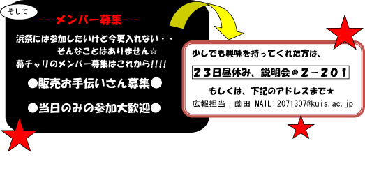
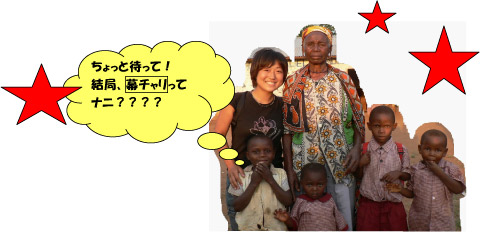
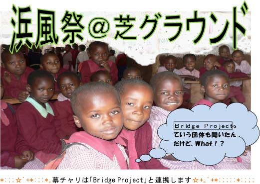
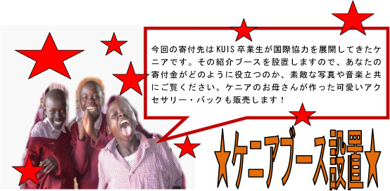

2007年10月27日（土）・28日（日）
皆様のご協力のもと大成功を収めた幕チャリを『浜風祭』でも開催します。
普通のフリーマーケットとは違い、売上金は寄付されます。衣服、キッチン用品、生活雑貨などを安く手に入れられるのと同時に、なんとチャリティも出来てしまう！秋服、冬服、掘り出しもの盛りだくさん！！乞うご期待！！


幕チャリとは…
神田外語大学CUPが2005年に開始した「幕張チャリティ・フリーマーケット」の略。毎年5月に、学生、地域、企業が協力し合い、キャンパスで開催する「幕チャリ」の売上を社会事業に寄付することで、社会貢献を目指すと共にチャリティの普及に努めています。

今回の売上金は、ケニアでの小学校建設、エイズで苦しむ人々への支援に全額寄付されます。本校卒業生である中村由香さんのケニアでの国際協力活動に共鳴し、幕チャリは、KUIS
BATON PROJECT、和田ゼミ社会起業研究会と連携して、ケニアへの「架け橋」となります。
